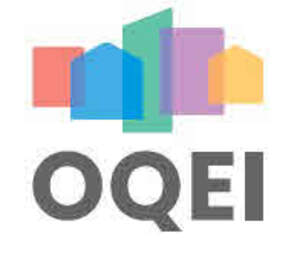

Trade Mark Journal No.2025/051 19 December 2025
UK00004308509 10 December 2025 (9,16,35,37,38,41,42)

International priority date claimed: 1 December 2025
(France)
(5204340)
- Class 9
- Measuring devices and instruments; Air quality sensors; Digital sensors; Thermal sensors; Humidity sensors; Pollution control sensors; Air pollution measuring devices; Registered software; Downloadable software; Computer software for recording, storing, transmitting, receiving, displaying and analysing data; Software applications for mobile phones; Electronic databases; Environmental control software; Environmental monitoring software; Data collection devices.
- Class 16
- Printed publications; brochures; newsletters; printed research reports; study guides; manuals; books; booklets; specialised journals; posters; printed educational materials.
- Class 35
- Computerised database management services; Data compilation; Provision of statistical data; Data processing services; Data analysis services; Computer file management; Market research and market analysis; Public relations communication strategy services; Public relations studies; Advertising, promotional and public relations services; Advertising services aimed at promoting public awareness of environmental issues; Publication of advertising texts; Organisation of exhibitions for advertising and commercial purposes.
- Class 37
- Inspection of buildings in connection with construction work; Installation, maintenance and repair of air quality control equipment; Installation of environmental control systems; Installation of environmental protection systems; Advisory services related to the repair, maintenance and servicing of environmental control systems; Installation of measuring equipment.
- Class 38
- Data transmission; Electronic transmission of information; Provision of access to databases; Provision of access to digital platforms for consulting, analysing and visualising environmental data; Electronic transmission of digital content; Electronic communication services.
- Class 41
- Organisation and running of symposiums, conferences or congresses; Continuing education services; Training; Training in the field of indoor environmental quality; Environmental education services; Education concerning awareness of air quality issues; Publication of non-advertising texts; Online provision of non-downloadable publications; Electronic publication of reports, studies and newsletters; Publishing; Publishing of scientific and educational content.
- Class 42
- Scientific research services; Scientific study services; Scientific analyses; Creation of data processing programmes; Environmental risk assessment; Air quality analysis services; Air quality data collection services; Monitoring of activities that affect the environment inside buildings; Software development and maintenance; Hosting of digital platforms; Hosting of databases; Design and development of data collection systems; Software as a service (SaaS); Provision of scientific information via computer databases; Environmental studies; Technical research services.
ANSES AGENCE NATIONALE DE SECURITE SANITAIRE DE L’ALIMENTATION DE L’ENVIRONNEMENT ET DU TRAVAIL
CENTRE SCIENTIFIQUE ET TECHNIQUE DU BATIMENT (CSTB)
Representative: Stevens & Bolton LLP